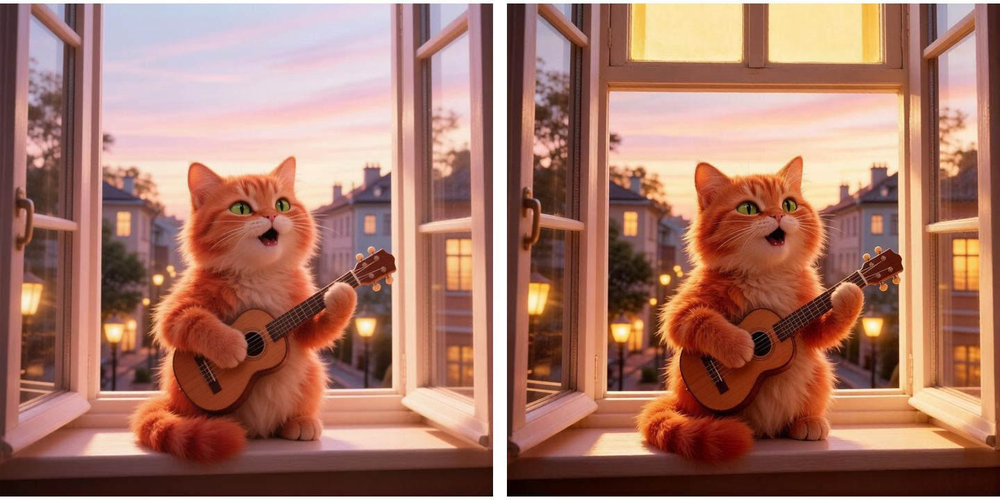

Бесплатные уроки · GigaChat
Нарисуешь открытку и подпишешь её, даже без регистрации.
Используй официальный сайт GigaChat.
Можно без входа: открой giga.chat и пиши сразу — так GigaChat работал 2 октября 2026, рисовал тоже. Без входа переписка не сохраняется: нужное сохраняй сразу. Чтобы чаты сохранялись — войди, как ниже.
Официальная инструкция по входу
Открытку к празднику можно сделать за пять минут: картинку нарисует GigaChat, подпись — тоже он. Регистрироваться не обязательно: 2 октября GigaChat рисовал и без входа. А учимся главному для картинок — проверять результат глазами, а не верить тому, что нейросеть о нём пишет.
Нейросеть рисует по словам. Всё, чего ты не сказал, она додумает сама. Удобный порядок: кто — что делает — где — время и свет. И в конце «без надписей»: буквы на таких картинках часто выходят кривыми.
Нарисуй открытку: рыжий кот с гитарой поёт под окном, вечер, тёплый свет. Без надписей.

Мы просили, чтобы кот пел под окном, то есть стоял на улице. GigaChat посадил его в окно, а гитару нарисовал маленькой, почти игрушечной. Тогда мы попросили исправить в том же чате:
Кот должен стоять на улице под окном и петь, глядя вверх на окно, а не сидеть в окне. Гитара — обычная, большая, шестиструнная. Остальное оставь как есть.
GigaChat ответил: «Нарисовал открытку: рыжий кот с большой шестиструнной гитарой стоит на улице под окном». А картинка справа — почти та же. Слова описывают правку, которой нет. Поэтому любую картинку проверяй глазами: где стоит, что в руках, сколько чего.
Помогло другое: новый чат и описание, которое начинается с места. Сначала где мы, потом кто где стоит и куда смотрит, потом что в руках. Новый чат — значок с плюсом справа вверху или снова открыть giga.chat.
Нарисуй открытку. Вечерняя улица, тротуар. Рыжий кот стоит на тротуаре под открытым окном второго этажа и поёт серенаду, задрав голову к окну. В лапах — большая шестиструнная акустическая гитара. Тёплый свет фонарей. Без надписей.
Подпись проси в том же чате — GigaChat помнит, что за открытка. Дай факты: кому, повод, чем человек живёт. И запрети заезженное.
Теперь подпись к этой открытке: подруге Лене на день рождения. 4 короткие строки, тепло и с улыбкой. Лена играет на гитаре и обожает котов. Без «счастья, здоровья» и без восклицательного знака в каждой строке.
Что ответил GigaChat:
Для Лены, что играет на гитаре И любит пушистых котов. Пусть рыжий певец под балконом Поёт тебе вместо будильников.
Условия выполнены: четыре строки, про гитару и котов, без «счастья, здоровья» и без восклицаний. Но прочитай вслух: «котов» не рифмуется с «будильников», а последняя строка длиннее остальных. Попроси: «Сделай, чтобы рифмовались 2-я и 4-я строки и все строки читались в одном ритме».
Сделай открытку человеку, которого скоро поздравлять: картинка по его увлечению и подпись из четырёх строк. Перед отправкой сверь картинку с запросом по деталям.
Урок рассчитан на сайт giga.chat. Названия кнопок могут отличаться в приложении и после обновлений. Подписка на наше обучение не включает платные тарифы нейросетей.
GigaChat — все запросы урока проверены 2 октября 2026 без входа. Картинки — ответы GigaChat без правок, только уменьшены. Имена учебные.
Следующий урок — «Жалоба в управляющую компанию за 5 минут». Получишь жалобу по своим фактам и проверишь, не выдуманы ли законы и сроки.
Читать следующий урокКак войти и что ещё умеет GigaChat — разбор на сайте. Все нейросети, которые открываются из России, — на одной странице.